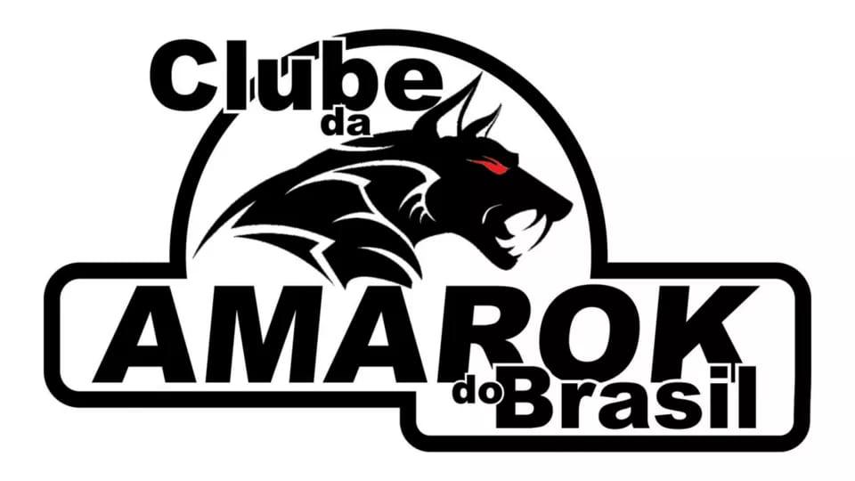
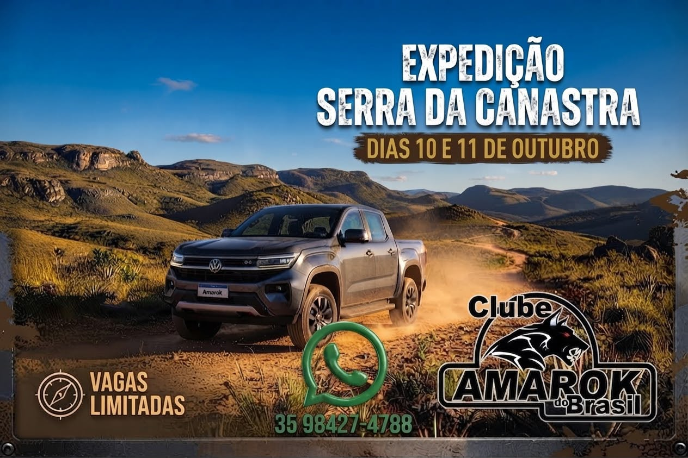

Manutenção
Compartilhamos experiências sobre revisões, manutenção, peças, acessórios e soluções para a Amarok.
O maior clube de proprietários e apaixonados pela Volkswagen Amarok em todo o Brasil.
O Clube Amarok do Brasil reúne proprietários e apaixonados pela Volkswagen Amarok de todas as regiões do país.
Desde 2020 promovemos encontros, passeios e compartilhamos conhecimento técnico sobre manutenção, revisões, acessórios e experiências com a Amarok.
Membros
Encontros
Estados
Comunidade
Compartilhamos experiências sobre revisões, manutenção, peças, acessórios e soluções para a Amarok.
Organizamos viagens, expedições e encontros para reunir proprietários de todo o Brasil.
Um ambiente onde todos ajudam uns aos outros, compartilhando conhecimento e amizade.
Encontros oficiais em diversas regiões do país, fortalecendo ainda mais nossa comunidade.
Cada encontro fortalece amizades, cria novas histórias e reúne apaixonados pela Amarok em todo o Brasil.




Conheça empresas e marcas que apoiam o Clube Amarok do Brasil e fazem parte da nossa comunidade.